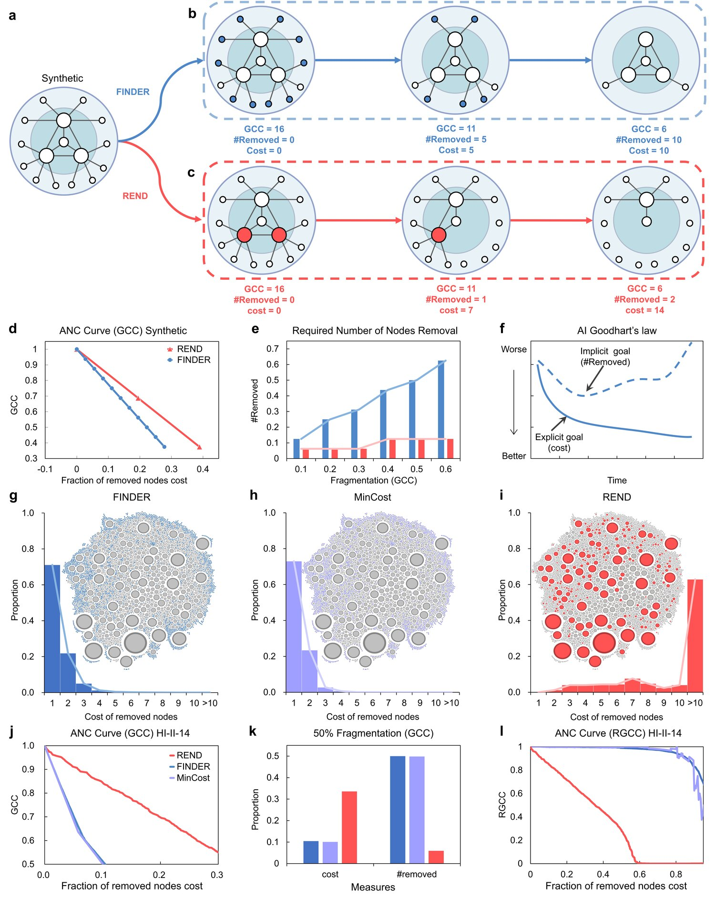
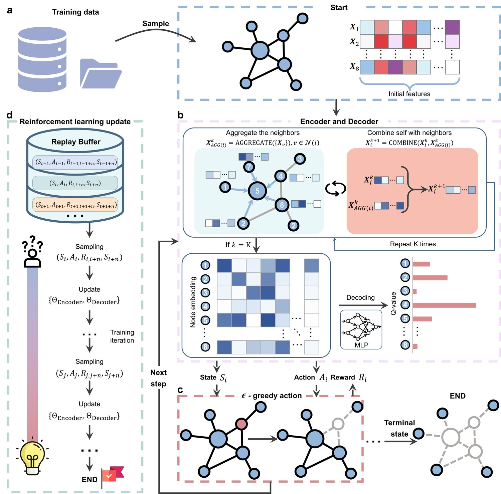
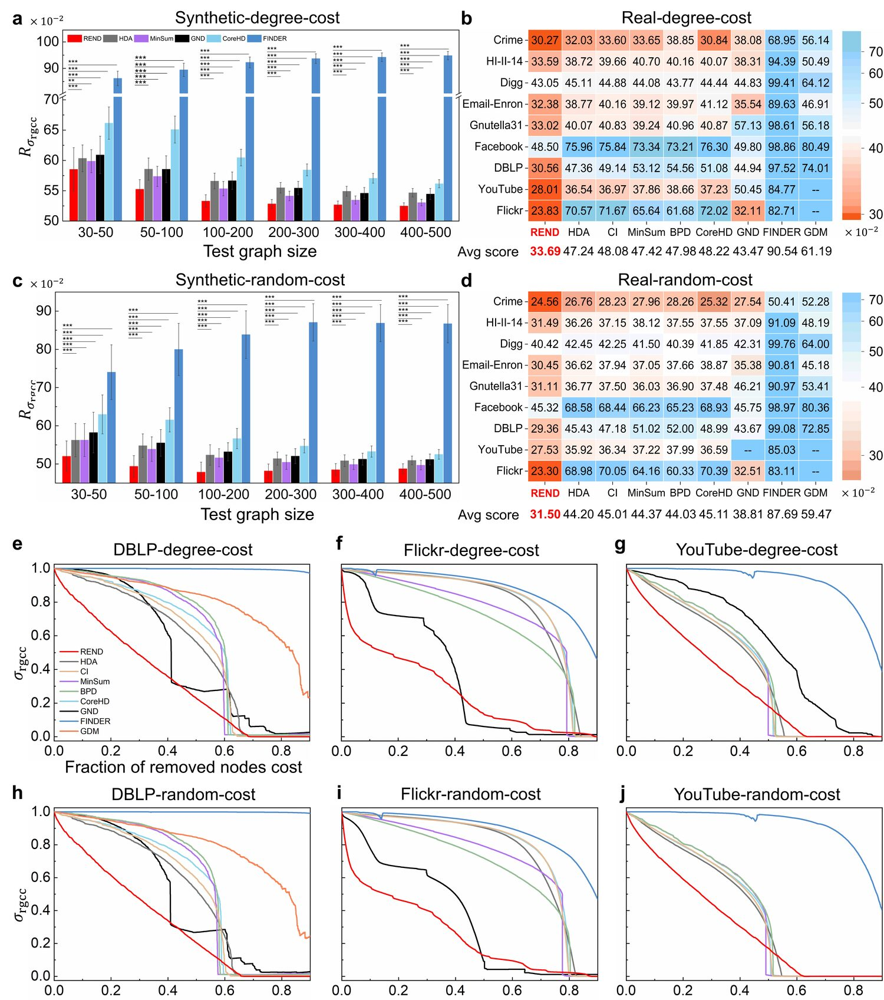
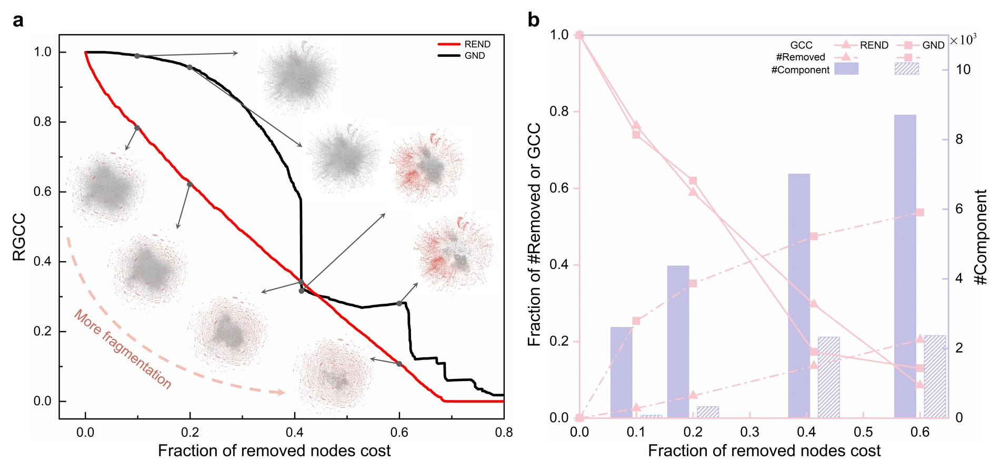
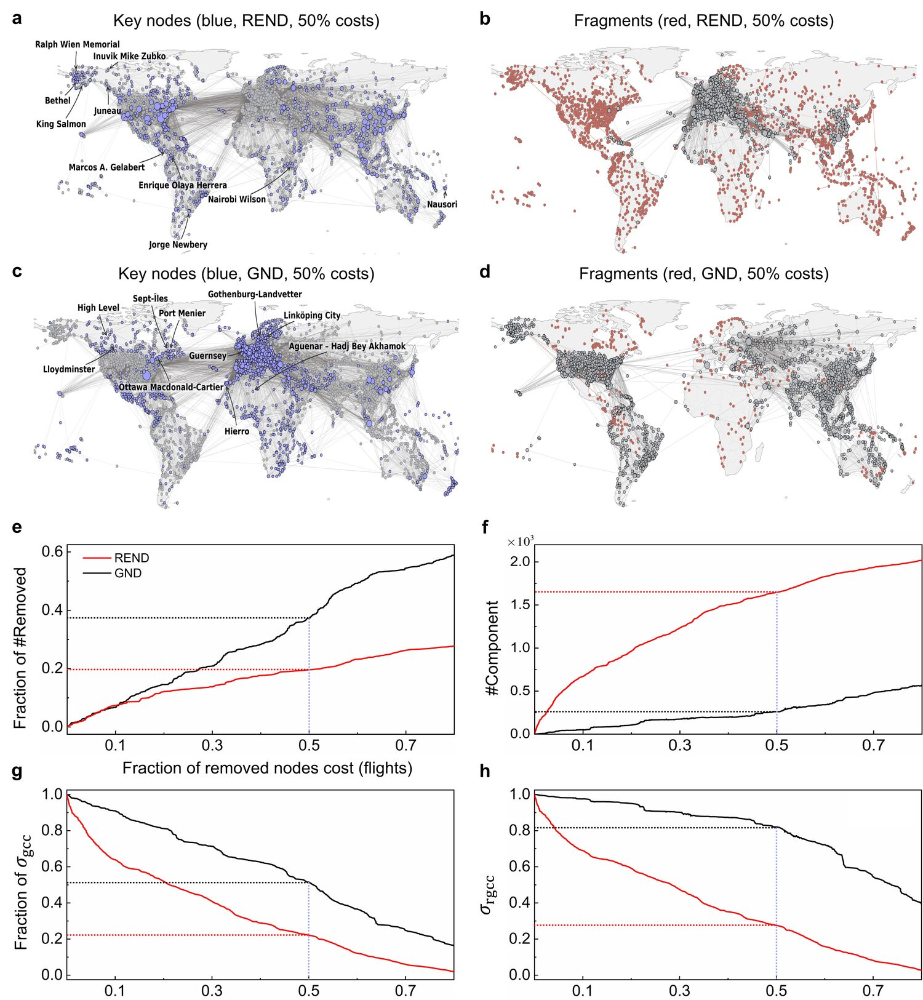
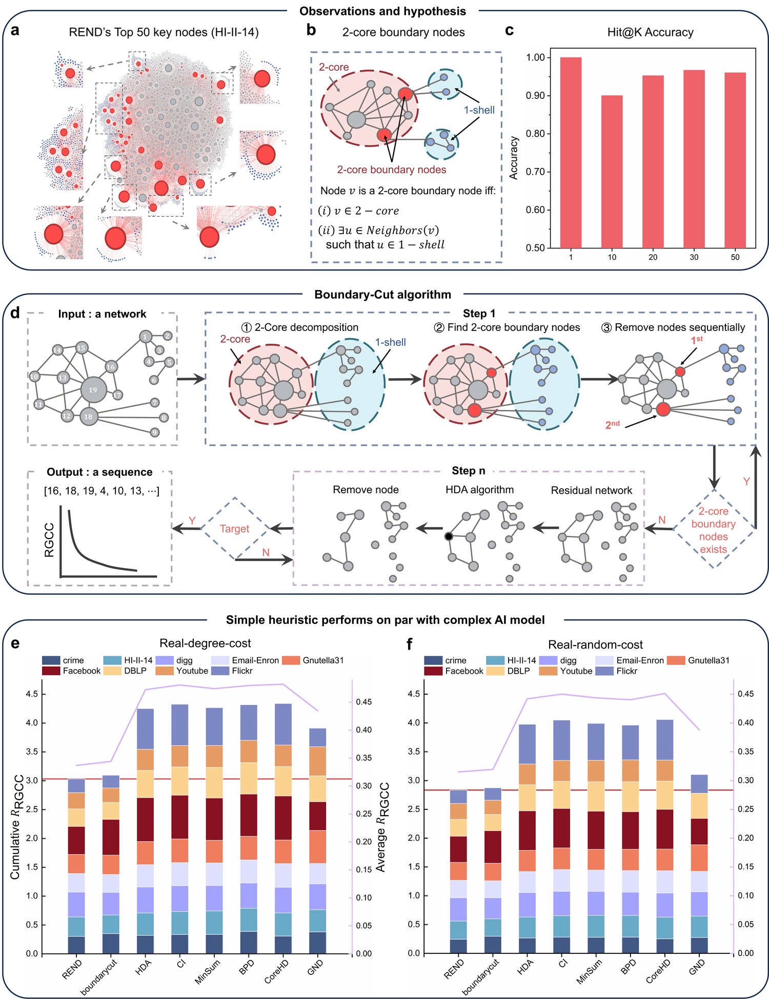

TL;DRWhen a measure becomes a target, it stops being a good measure.
State-of-the-art cost-aware dismantling models cheat: under the conventional metric they fragment a network by harvesting huge numbers of cheap, peripheral nodes — mathematically optimal, operationally absurd. This is a textbook Goodhart's law trap. We fix the metric with the Relative Giant Connected Component (RGCC), train a reinforcement-learning agent REND on it, and then distill the learned policy into a fully transparent heuristic, Boundary-Cut, that needs zero training.
1Abstract
When a metric becomes an optimization target, it ceases to be a good metric. This is a Goodhart's law trap, and it poses a growing risk as AI systems are increasingly deployed to optimize complex objectives. Here we uncover a concrete instance of this trap in cost-constrained network dismantling — the problem of removing an optimal set of nodes to fragment a network under heterogeneous removal costs. The conventional metric, which rewards faster giant connected component (GCC) decline at lower cost, inadvertently incentivizes massive removal of cheap peripheral nodes. Such strategies are mathematically optimal under the metric but operationally infeasible because they ignore the implicit cost of each removal action. To close the trap, we introduce the Relative Giant Connected Component (RGCC), a corrected measure that explicitly penalizes excessive removal by normalizing GCC over remaining nodes. Using RGCC, we develop REND, a deep reinforcement learning model to maximize cost-effective fragmentation. On real-world networks, REND removes 50–70% fewer nodes yet generates 3–6 times more fragments than existing methods. Interpretability reveals that REND preferentially targets 2-core boundary nodes, which inspires a simple transparent heuristic (Boundary-Cut) that matches the black-box AI's performance with zero training.
2The Problem: a Goodhart's Trap
Cost-constrained dismantling looks for a node-removal sequence (v1, …, vN) that minimizes the Accumulated Normalized Connectivity (ANC):
where σ is the GCC size and c(vk) the normalized removal cost. A lower ANC curve is conventionally read as a more cost-effective strategy. The catch: a drop in GCC can come from two very different processes — genuine structural fragmentation (removing critical nodes that break the network apart) or trivial shrinkage (removing many cheap leaves so fewer nodes simply remain). Because peripheral nodes are cheap, an optimizer can drive the ANC curve down by mass-harvesting them. FINDER, a state-of-the-art RL agent, learned exactly this shortcut; even a trivial MinCost greedy baseline matches it under ANC.

3The Remedy: the RGCC Metric
We replace the static denominator N with a dynamic one — the number of remaining nodes:
and recompute the evaluation objective as
(i) Penalizes ineffective removals — removing a node outside the GCC shrinks Nleft while σgcc stays put, so RGCC rises. (ii) Distinguishes fragmentation from shrinkage — a single leaf removal leaves RGCC unchanged, while a removal that disconnects many nodes drops it sharply. (iii) Encodes a cost–scale trade-off — every removal shrinks the denominator, raising the bar for all future actions.
▶See it for yourselfInteractive
Watch dismantling happen step-by-step — on a tiny demo network or the real 829-node crime network — and see the two metrics react in real time. The ANC curve (dashed, GCC / N) rewards any shrinkage; the RGCC curve (solid, GCC / Nleft) only drops for genuine fragmentation. Try a strategy, or switch to manual mode and click nodes to feel the three properties of RGCC directly.
DEMO NETWORK · node size ∝ removal cost (degree-cost)
METRIC RESPONSE · x = cumulative cost, y = connectivity
Pick a strategy and press Play. Or turn on Manual explore and click any node.
| Strategy | R₀₀₀₀ (ANC) | R (RGCC) | nodes to break |
|---|---|---|---|
| MinCost | — | — | — |
| HDA (adaptive) | — | — | — |
| Boundary-Cut | — | — | — |
| REND | — | — | — |
Lower R (RGCC) is better. “nodes to break” = removals needed to first cut the network into ≥ 2 real fragments — the essence of the over-removal problem: cheap-first strategies waste dozens of operations before achieving any true fragmentation. MinCost, HDA and Boundary-Cut are deterministic algorithms; REND is the trained deep-RL model. On the demo network the three heuristics run live in your browser; on the crime network all sequences — including REND's — are the real results computed offline. On both, Boundary-Cut closely tracks REND, and MinCost falls into the over-removal trap.
4REND: an RGCC-Optimized RL Agent
Following the FINDER paradigm, REND is trained fully data-driven on millions of small synthetic Barabási–Albert graphs (30–50 nodes), with no hand-designed heuristics. Each dismantling episode is a Markov decision process: the state is the residual graph, the action selects a node to remove, and the reward is the decrease in the RGCC-based objective. A graph-neural-network encoder embeds nodes (initialized with degree/cost features) via neighborhood aggregation; a parameterized Q-function decoder scores actions.
Directly optimizing the RGCC reward is unstable because the time-varying denominator (N−k) couples three node-dependent terms. We therefore train on a lower bound that fixes the denominator at N and decouples connectivity from cost:

5Performance
REND is trained once on 30–50 node graphs and evaluated, unchanged, on larger synthetic graphs and nine real-world networks. Under the corrected RRGCC metric it consistently and significantly outperforms all baselines — for both degree- and random-cost, on synthetic and real data. Compared with the second-best method, REND lowers the ANC score by an average of 4.0% (vs. MinSum) on synthetic graphs and 20.7% (vs. GND) on real networks. Notably, FINDER — highly optimized for the old metric — now performs the worst under RGCC.

| Method | 30–50 | 50–100 | 100–200 | 200–300 | 300–400 | 400–500 |
|---|---|---|---|---|---|---|
| REND | 58.52±3.58 | 55.24±1.58 | 53.29±1.04 | 52.83±0.72 | 52.67±0.62 | 52.48±0.52 |
| MinSum | 59.87±1.90 | 57.36±1.66 | 55.34±1.19 | 54.13±0.79 | 53.46±0.67 | 53.04±0.53 |
| HDA | 60.34±2.21 | 58.56±1.83 | 56.59±1.29 | 55.49±0.87 | 54.91±0.81 | 54.66±0.70 |
| GND | 60.90±3.09 | 58.54±2.22 | 56.65±1.43 | 55.44±1.10 | 54.59±0.93 | 54.45±0.92 |
| CoreHD | 66.15±2.67 | 65.09±2.22 | 60.46±1.37 | 58.43±0.98 | 57.05±0.80 | 56.15±0.67 |
| FINDER | 86.18±2.77 | 89.42±2.52 | 92.24±2.02 | 93.67±1.82 | 94.21±1.63 | 94.80±1.59 |
| Method | 30–50 | 50–100 | 100–200 | 200–300 | 300–400 | 400–500 |
|---|---|---|---|---|---|---|
| REND | 52.00±4.01 | 49.37±2.81 | 47.85±2.59 | 48.16±1.81 | 48.47±1.60 | 48.73±1.30 |
| MinSum | 56.24±4.31 | 53.87±3.21 | 51.61±2.36 | 50.44±1.86 | 49.86±1.33 | 49.68±1.23 |
| HDA | 56.22±4.36 | 54.78±3.08 | 52.33±2.68 | 51.39±1.70 | 50.84±1.54 | 50.92±1.14 |
| GND | 58.21±5.31 | 55.50±3.50 | 53.18±2.38 | 52.04±1.96 | 51.25±1.56 | 51.17±1.41 |
| CoreHD | 62.96±5.10 | 61.54±3.17 | 56.64±2.65 | 54.67±1.79 | 53.24±1.47 | 52.50±1.27 |
| FINDER | 74.02±7.16 | 79.97±6.83 | 83.84±6.24 | 87.05±4.88 | 86.86±4.85 | 86.70±5.01 |
6More Fragments, Fewer Nodes
Compared with GND on the DBLP co-authorship network, at the same 60% cost budget both reduce the GCC to ~10% of its original size — but REND removes only 20.5% of nodes vs. GND's 53.7%, and produces ~3.7× more fragments (8,705 vs. 2,371).

On the real-world Openflights airline network (node cost = total flights), at a 50% budget REND removes 19.6% of nodes vs. GND's 37.2%, generates ~6.3× more fragments (1,646 vs. 261), and leaves a residual GCC less than half the size (22.2% vs. 51.5%). Its top targets are not high-degree hubs but structural holes — e.g. four small Alaskan airports whose removal isolates 31% of Alaskan airports.

7Demystifying REND: the Boundary-Cut Heuristic
What did the black box learn? Across top-K removals, over 90% of REND's targets are 2-core boundary nodes — nodes inside the 2-core that still touch the 1-shell. They are neither expensive hubs nor trivial leaves, but low-cost bridges between the periphery and the core.
We distill this into Boundary-Cut: iteratively perform 2-core decomposition, remove boundary nodes in descending order of a cost-effectiveness ratio (associated 1-shell nodes ÷ removal cost), and repeat. Despite needing no training, it matches — and sometimes beats — REND: 0.3229 vs. 0.3369 (degree-cost) and 0.3049 vs. 0.315 (random-cost) on RRGCC.

8Citation
@article{fan2026goodhart,
title = {Goodhart's trap in cost-constrained network dismantling and its remedy},
author = {Fan, Changjun and Qing, Feng and Zeng, Li and Tan, Suoyi and
Li, Aming and Lu, Xin and Huang, Jincai and Liu, Zhong},
year = {2026}
}Code: github.com/crack521/REND · Data & Results: 10.5281/zenodo.20841196